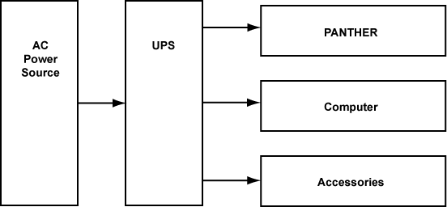
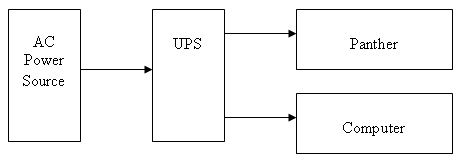

UPS General Information
Uninterruptible Power Supply (UPS) Overview
The purpose of the UPS is to protect sensitive systems from poor quality utility power, complete loss of power, or other associated problems. System types include computers, workstations, process control systems, telecommunications systems, sales terminals, or other critical instrumentation. Electrical interference may occur causing problems in AC Alternating current power. Interference may come from lightning, the power company, radio transmissions, or motors. Normal operation of sensitive electrical equipment requires protection against power outages, low or high voltage levels, frequency variations, differential and common-mode noises, and transients. In order to prevent power line problems from reaching critical systems and causing damage to software, hardware, or causing equipment to malfunction, the UPS helps by maintaining a constant voltage, isolating critical load output, and cleaning the utility AC power.
Alternating current power. Interference may come from lightning, the power company, radio transmissions, or motors. Normal operation of sensitive electrical equipment requires protection against power outages, low or high voltage levels, frequency variations, differential and common-mode noises, and transients. In order to prevent power line problems from reaching critical systems and causing damage to software, hardware, or causing equipment to malfunction, the UPS helps by maintaining a constant voltage, isolating critical load output, and cleaning the utility AC power.
Modes of Operation
Emergency (Battery)
In the event that the AC power from the utility system fails, the DC power is supplied from the batteries to the chopper and to the inverter to provide a continued and stable AC Power Supply to the load without interruption.
Normal (Inverter)
The rectifier converts AC to DC to power the inverter, which supplies power to the critical load and simultaneously float charging the batteries.
Static Bypass
If the UPS unit is severely overloaded or develops an internal fault, power is automatically switched from the unit's main circuit to the bypass circuit. Power is conditioned by line filters, during static bypass operation.
UPS Input
Electrical Requirements
| Voltage | 120 VAC or 230 VAC Single Phase |
| Voltage Range | 80V~144V (+20% to -33%), 161V~276V (+20% to -30%) |
| Frequency | 50 or 60 Hz |
| Synchronization | ± 3 Hz |
| Input Power Factor | Greater than 0.97 |
| Input Total Harmonic Distortion | Less than 9% (current) |
UPS Output
| Voltage | 100/110/115/120/127VAC, 208/220/230/240VAC Single Phase | ||||
| Capacity |
|

|
Note—
ALL Fusion Installs require the Output Voltage on the UPS to be set at 220V. |
Interfacing Modules
The UPS provides AC power to the Panther system, computer, and accessories.
Theory/Sequence of Operation
The purpose of the UPS is to provide the safe and controlled shutdown of the Panther system should there be an interruption or loss of normal electrical power.
The UPS module performs the following functions:
- The UPS conditions the unstable, incoming power from the utility company. The module filters out irregularities and provides clean, uninterruptible power to the system.
- The module provides ride-through power to cover for sags or short-term outages.
- The module enables seamless system shutdown during a complete power outage.
Flow Diagram

Modes
Emergency (Battery)
AC power from the utility system is converted into DC power chopper. The stepped up DC poser is then converted to AC power by the inverter. The output voltage waveform of the inverter will be the pulse voltage waveform modulated by the PWM control using the 19.2 kHz switching frequency sine wave. the PWM-modulated voltage waveform is transformed into a sine voltage waveform by the inductive component of the inverter inductor and by the capacitive component of the capacitor filter. The chopper, inverter, and charger use the IGBT with a self-extinguishing function and a high switching speed.
The UPS module performs the following functions:
- The UPS conditions the unstable, incoming power from the utility company. The module filters out irregularities and provides clean, uninterruptible power to the system.
- The module provides ride-through power to cover for sags or short-term outages.
- The module enables seamless system shutdown during a complete power outage.
Flow Diagram

 button at the top of the page to send feedback, comments, or change requests.
button at the top of the page to send feedback, comments, or change requests.